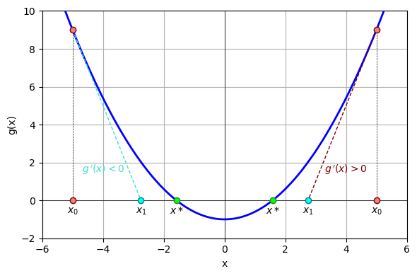

Уравнение Речфорда-Райса для двухфазных систем#
В предыдущем разделе был представлен вывод уравнения Речфорда-Райса (уравнения фазовых концентраций). Данный раздел посвящен подходам к решению данного уравнения для двухфазных систем.
Рассмотрим двухфазную систему. Для такого случая уравнение Речфорда-Райса записывается следующим образом:
где \(f\) – мольная доля нереференсной фазы, \(y_i\) – мольная доля компонента в системе, \(N_c\) – количество компонентов в системе, \(K_i\) – константа фазового равновесия (отношение мольной доли компонента в нереференсной фазе к мольной доли этого же компонента в референсной).
С математической точки зрения уравнение Речфорда-Райса представляет собой сумму гипербол, поэтому наличие точки перегиба, то есть невыпуклый вид функции, осложняет применение численных методов для решения данного уравнения. Кроме того, одной из особенностей уравнения Речфорда-Райса является наличие полюсов в точках, где знаменатель равен нулю:
Для наглядности рассмотрим поведение данного уравнения на следующем примере.
Пример
Пусть мольные доли компонентов и их константы фазового равновесия заданы следующим образом.
import numpy as np
yi = np.array([0.2, 0.4, 0.3, 0.1])
kvi = np.array([5., 1.2, 0.8, 0.2])
Необходимо найти мольную долю нереференсной фазы для заданной системы.
Получим абсциссы полюсов функции Речфорда-Райса.
poles = -1. / (kvi - 1.)
poles
array([-0.25, -5. , 5. , 1.25])
Построим график функции Речфорда-Райса. Из-за наличий полюсов график функции будем строить сегментно.
from matplotlib import pyplot as plt
fig1, ax1 = plt.subplots(1, 1, figsize=(6., 4.), tight_layout=True)
eps = 1e-3
segments = np.sort(np.append(poles, [-7., 6.]))
for i in range(segments.shape[0] - 1):
f = np.linspace(segments[i] + eps, segments[i+1] - eps, 100, endpoint=True)
R = ((kvi - 1.) / (f[:, None] * (kvi - 1.) + 1)).dot(yi)
p1, = ax1.plot(f, R, lw=2., c='b', zorder=4)
for pole in poles:
p2, = ax1.plot([pole, pole], [-1., 1.], lw=2., ls='--', c='r', zorder=4)
p3 = ax1.fill_betweenx([-1., 1.], 0., 1., color='g', alpha=0.2, zorder=3)
ax1.plot([-7., 6.], [0., 0.], lw=0.5, c='k', zorder=2)
ax1.set_ylim(-1., 1.)
ax1.set_ylabel('Уравнение Речфорда-Райса')
ax1.set_xlim(-7., 6.)
ax1.set_xlabel('Мольная доля фазы, д.ед.')
ax1.legend(
[p1, p2, p3],
['Уравнение Речфорда-Райса', 'Полюс', 'Физичные значения'],
loc=2,
fontsize=8,
)
ax1.grid(zorder=1)
Анализируя полученные результаты, можно отметить, что помимо корня, находящегося в области физичных значений мольной доли фазы, то есть на отрезке \(\left[0, \, 1 \right]\), существуют также и другие корни. Естественно, численные методы решения нелинейных уравнений, применяемые для такого вида функций, не могут гарантировать быстрый и надежный поиск нужного корня, поэтому прежде чем переходить к рассмотрению алгоритмов решения уравнения Речфорда-Райса для двухфазных систем, необходимо выполнить ряд преобразований, позволяющих видоизменить функцию для получения выпуклого вида, чтобы гарантированно находить корень на нужном отрезке.
Прежде всего, необходимо отметить, что у задачи решения уравнения Речфорда-Райса есть несколько подходов. Одним из таких, согласно [Wang and Orr, 1997], является выбор в качестве основной переменной мольной доли компонента в некоторой фазе, а не мольной доли фазы. Другой подход, изложенный в работе [Leibovici and Neoschil, 1992], основан на преобразовании уравнения Речфорда-Райса, позволяющему сделать функцию более линейной в определенном интервале, содержащем корень. Третий подход может быть основан на сочетании методов Ньютона и бисекции для гарантированного нахождения корня уравнения на заданном интервале. Четвертый подход предполагает выбор других основных переменных (количества вещества компонентов в фазах) для нахождения равновесного состония, позволяющий вообще убрать необходимость решения уравнения Речфорда-Райса, однако об этом речь пойдет в разделе, посвященном определению равновесного состояния. Подход к решению уравнения Речфорда-Райса, представленный далее, основан на работах [Nichita and Leibovici, 2013], [Nichita and Leibovici, 2017]. Стоит отметить, что существуют и другие научные публикации, посвященные исследованию численных методов решения уравнения Речфорда-Райса в двухфазной постановке, например, [Mikyska, 2023; Li and Johns, 2007; Juanes, 2008; Gaganis et al, 2012] и многие другие.
Для начала необходимо описать тот результат, который необходимо получить. Поскольку численные методы решения нелинейных уравнений, в том числе метод Ньютона, показывают свою эффективность для выпуклых функций, а уравнение Речфорда-Райса не является таковым, то необходимо путем замены переменных преобразовать рассматриваемую функцию в выпуклую на интервале, содержащем искомый корень.
Стоит отметить, что для того чтобы уравнение Речфорда-Райса имело хотя бы один корень, необходимо, чтобы хотя бы одно из слагаемых суммы
было отрицательным и хотя бы одно было положительным. Это возможно в том случае, если хотя бы одна из констант фазового равновесия будет меньше единицы, и хотя бы одна константа фазового равновесия будет больше единицы. Таким образом, дальнейшее рассмотрение справедливо с учетом сформулированного условия.
Кроме того, ранее было показано, что уравнение Речфорда-Райса имеет \(N_c\) асимптот, абсциссы которых описываются выражением:
При этом для того чтобы мольные доли компонентов в фазах, определяемые выражением:
были положительными, необходимо, чтобы было положительным следующее выражение:
Пусть \(K_1 > K_i > K_{N_c}, \; i = 2 \, \ldots \, N_c-1\), то есть константы фазового равновесия расположены по убыванию, тогда часть из них будет больше единицы, а часть из них меньше. Тогда представленное выше неравенство преобразуется в систему неравенств:
Ряд, определяемый выражением
содержит только отрицательные значения, причем наибольшее из них соответствует наибольшей константе фазового равновесия \(K_1\). Ряд, определяемый выражением
содержит только положительные значения, причем наименьшее из них соответствует наименьшей константе фазового равновесия \(K_{N_c}\). Таким образом, диапазон значений:
определяет отрезок с необходимым корнем уравнения. Использование данного отрезка вместо отрезка физичных значений \(\left[0, \, 1 \right]\) было впервые предложено и обосновано в работе [Whitson and Michelsen, 1989] и получило название negative flash window (NF-window).
Теперь перейдем к рассмотрению преобразования функции Речфорда-Райса к выпуклому виду на данном отрезке. Для этого введем следующее обозначение:
Тогда уравнение Речфорда-Райса преобразуется к следующему виду:
А отрезок NF-window:
Введем новую переменную:
При этом отрезок NF-window \(f \in \left( с_1, \, с_{N_c} \right)\) эквивалентен интервалу \(a \in \left(0, \, +\infty \right)\). Уравнение Речфорда-Райса преобразуется следующим образом:
Пусть \(d_i = \frac{c_1 - c_i}{c_{N_c} - c_1}, \; i = 2 \, \ldots \, N_c-1\), при этом \(d_1 = 0\) и \(d_{N_c} = -1\), тогда:
Данная функция имеет асимптоту в точке \(a = 0\). Докажем, что полученная функция
является выпуклой на рассматриваемом интервале \(a \in \left(0, \, +\infty \right)\). Для этого необходимо доказать, что \(\frac{\partial^2 G}{\partial a^2} > 0, \; a \in \left(0, \, +\infty \right)\).
Доказательство
Получим первую производную от \(G \left( a \right)\):
Вторая частная производная функции \(G \left( a \right)\) по \(a\):
Анализируя данное выражение, можно заключить, что для того чтобы показать, что вторая частная производная функции \(G \left( a \right)\) по \(a\) больше нуля на интервале \(a \in \left(0, \, +\infty \right)\), необходимо доказать следующее неравенство:
Для этого выполним следующие преобразования:
Поскольку \(\left( K_1 - K_i \right) > 0, \; \left( 1 - K_{N_c} \right) > 0, \; \left( K_{N_c} - K_i \right) < 0, \; \left( 1 - K_1 \right) < 0\), то:
Следовательно, вторая частная производная функции \(G \left( a \right)\) по \(a\) больше нуля на интервале \(a \in \left(0, \, +\infty \right)\), и функция \(G \left( a \right)\) является выпуклой на этом интервале.
Построим график функции \(G \left( a \right)\) для рассматриваемых коэффициентов фазового равновесия:
Для начала рассчитаем значения коэффициентов \(c_i\) и \(d_i\):
ci = 1. / (1. - kvi)
ci
array([-0.25, -5. , 5. , 1.25])
di = (ci[0] - ci) / (ci[-1] - ci[0])
di
array([ 0. , 3.16666667, -3.5 , -1. ])
Построим график функции \(G \left( a \right)\)
a = np.linspace(1e-3, 10., 1000, endpoint=True)
G = (a + 1.) * (1. / (a[:, None] * (di + 1) + di)).dot(yi)
fig2, ax2 = plt.subplots(1, 1, figsize=(6., 4.), tight_layout=True)
ax2.plot(a, G, lw=2., c='b', zorder=4, label='G(a)')
ax2.plot([0., 0.], [-1., 1.], lw=2., c='r', ls='--', label='Полюс', zorder=4)
ax2.fill_betweenx(
[-1., 1.],
-ci[0] / ci[-1],
(1. - ci[0]) / (ci[-1] - 1.),
color='g', alpha=0.2, zorder=3, label='Физичные значения',
)
ax2.plot([0., 10.], [0., 0.], lw=0.5, c='k', zorder=2)
ax2.set_xlim(0., 10.)
ax2.set_xlabel('a')
ax2.set_ylim(-1., 1.)
ax2.set_ylabel('G(a)')
ax2.legend(loc=1, fontsize=8)
ax2.grid(zorder=1)
Видно, что функция \(G \left( a \right)\) является выпуклой и имеет корень в диапазоне физичных значений. Продемонстрируем применение метода Ньютона для решения рассматриваемой задачи.
Создадим функцию, которая рассчитывает значение и первую производную функции \(G \left( a \right)\), и проинициализируем ее:
from functools import partial
def G_val_der(a, yi, di):
denom = 1. / (di + a * (1. + di))
return (1. + a) * yi.dot(denom), -1. * yi.dot(denom * denom)
pG = partial(G_val_der, yi=yi, di=di)
Затем создадим функцию, которая принимает на вход кортеж из номера итерации k, значения переменной на этой итерации ak, ее изменения dak и значения уравнения eqk, а также точность решения уравнения tol и максимальное количество итераций maxiter, и возвращает необходимость выполнения следующей итерации:
def condit(carry, tol, maxiter):
k, ak, _, eqk = carry
return k < maxiter and np.abs(eqk) > tol
pcondit = partial(condit, tol=1e-8, maxiter=50)
Далее создадим функцию, которая принимает на вход кортеж с результатами предыдущей итерации и обновляет их значениями для новой итерации:
def update(carry, pF, tmpl):
k, ak, dak, _ = carry
akp1 = ak - dak
eqkp1, gradkp1 = pF(akp1)
dakp1 = eqkp1 / gradkp1
print(tmpl % (k + 1, akp1, eqkp1))
return k + 1, akp1, dakp1, eqkp1
pupdate = partial(update, pF=pG, tmpl='%3s%12.2e%12.2e')
Решим уравнение Речфорда-Райса с использованием метода Ньютона:
print('%3s%12s%12s' % ('Nit', 'a', 'G(a)'))
k = 0 # Iteration number
ak = 4. # Initial estimate
eqk, gradk = pG(ak) # Function G(a) and its derivative
dak = eqk / gradk # Basic variable update
print('%3s%12.2e%12.2e' % (k, ak, eqk))
carry = (k, ak, dak, eqk)
while pcondit(carry):
carry = pupdate(carry)
k, a, _, eq = carry
f = (a * ci[-1] + ci[0]) / (a + 1.)
print('f = %.3f' % f)
Nit a G(a)
0 4.00e+00 -2.60e-01
1 1.74e+00 4.14e-02
2 1.98e+00 2.04e-03
3 1.99e+00 4.65e-06
4 1.99e+00 2.41e-11
f = 0.748
Метод Ньютона успешно нашел решение за пять итераций. Кроме того, анализируя изменение знака функции \(G \left( a \right)\), можно отметить, что метод Ньютона сходится немонотонно, то есть, если обозначить \(a^*\) как решение уравнения, то на нулевой итерации \(a_0 > a^*, \; G \left( a_0 \right) < 0\), а на первой итерации \(a_1 < a^*, \; G \left( a_1 \right) > 0\). В этом случае значение на первой итерации, по сути, является перелетом (overshoot). Такое поведение иногда может приводить к колебаниям вокруг решения уравнения или выходу за границы рассматриваемого интервала (NF-window). Появление перелета на первой итерации обуславливается двумя факторами: начальным приближением и видом (формулировкой) решаемого уравнения. Рассмотрим путь сходимости метода Ньютона для другого начального приближения:
print('%3s%12s%12s' % ('Nit', 'a', 'G(a)'))
k = 0 # Iteration number
ak = 1. # Initial estimate
eqk, gradk = pG(ak) # Function G(a) and its derivative
dak = eqk / gradk # Basic variable update
print('%3s%12.2e%12.2e' % (k, ak, eqk))
carry = (k, ak, dak, eqk)
while pcondit(carry):
carry = pupdate(carry)
k, a, _, eq = carry
f = (a * ci[-1] + ci[0]) / (a + 1.)
print('f = %.3f' % f)
Nit a G(a)
0 1.00e+00 2.09e-01
1 1.66e+00 5.53e-02
2 1.97e+00 3.69e-03
3 1.99e+00 1.53e-05
4 1.99e+00 2.61e-10
f = 0.748
Видно, что для данного начального приближения метод Ньютона сошелся к решению без перелетов. Таким образом, выбор начального приближения и вида (формулировки) решаемого уравнения может непосредственно влиять на устойчивость (robustness) численного метода. Для наглядности рассмотрим следующий пример.
Пример
Пусть константы фазового равновесия и мольные доли компонентов заданы следующим образом:
eps = 1e-9
kvi = 1. + np.array([2. * eps, 1.5 * eps, eps, -eps, -1.5 * eps, -2. * eps])
yi = np.full_like(kvi, 1. / 6.)
Необходимо найти решение уравнения Речфорда-Райса, соответствующее NF-window.
Рассчитаем значения коэффициентов \(c_i\) и \(d_i\):
ci = 1. / (1. - kvi)
ci
array([-5.00000014e+08, -6.66666710e+08, -9.99999917e+08, 1.00000003e+09,
6.66666661e+08, 4.99999986e+08])
di = (ci[0] - ci) / (ci[-1] - ci[0])
di
array([ 0. , 0.1666667 , 0.4999999 , -1.50000004, -1.16666667,
-1. ])
Построим график функции \(G \left( a \right)\)
a = np.linspace(1e-3, 10., 1000, endpoint=True)
G = (a + 1.) * (1. / (a[:, None] * (di + 1) + di)).dot(yi)
fig3, ax3 = plt.subplots(1, 1, figsize=(6., 4.), tight_layout=True)
ax3.plot(a, G, lw=2., c='b', zorder=3)
ax3.plot([0., 10.], [0., 0.], lw=0.5, c='k', zorder=2)
ax3.set_xlim(0., 10.)
ax3.set_xlabel('a')
ax3.set_ylim(-2.5, 1.)
ax3.set_ylabel('G(a)')
ax3.grid(zorder=1)
Из данного графика видно, что рассматриваемое уравнение имеет корень внутри NF-window: \(a \approx 1\). Попробуем применить метод Ньютона:
pG = partial(G_val_der, yi=yi, di=di)
pcondit = partial(condit, tol=1e-8, maxiter=50)
pupdate = partial(update, pF=pG, tmpl='%3s%12.2e%12.2e')
print('%3s%12s%12s' % ('Nit', 'a', 'G(a)'))
k = 0 # Iteration number
ak = 4. # Initial estimate
eqk, gradk = pG(ak) # Function G(a) and its derivative
dak = eqk / gradk # Basic variable update
print('%3s%12.2e%12.2e' % (k, ak, eqk))
carry = (k, ak, dak, eqk)
while pcondit(carry):
carry = pupdate(carry)
k, a, _, eq = carry
f = (a * ci[-1] + ci[0]) / (a + 1.)
print('f = %.3f' % f)
Nit a G(a)
0 4.00e+00 -1.02e+00
1 -4.62e-02 -2.07e+00
2 -6.85e-02 -4.81e-01
3 -7.66e-02 -8.23e-03
4 -7.68e-02 1.17e-06
5 -7.68e-02 2.54e-14
f = -583179988.823
Метод Ньютона сошелся к решению, находящемуся за пределами NF-window. Причина – перелет на первой итерации. Таким образом, необходимо доработать представленный алгоритм для повышения его устойчивости. Рассмотрим теорему Дарбу, позволяющую определить наличие и отсутствие перелета на итерации:
Теорема
Пусть \(x_0\) является начальным приближением уравнения \(g \left( x \right) = 0\). Выпуклая функция \(g \left( x \right)\) непрерывна и дважды дифференциируема на рассматриваемом интервале. Условием отсутствия перелета при использовании метода Ньютона и начальном приближении \(x_0\) является:
Иными словами, необходимо доказать, что если выполняется условие \(g \left( x_0 \right) \, g'' \left( x_0 \right) > 0\), то расчетный шаг \(h_0 = - \frac{g \left( x_0 \right)}{g' \left( x_0 \right)}\) меньше расстояния \(h = x^* - x_0\) от начального приближения \(x_0\) до решения уравнения \(x^*\).
Доказательство
Для начала отметим, что условие \(g \left( x_0 \right) \, g'' \left( x_0 \right) > 0\) эквивалентно тому, что обе функции \(g \left( x_0 \right)\) и \(g'' \left( x_0 \right)\) имеют один знак в точке \(x_0\). Это может быть верно в двух случаях.
Пусть \(g \left( x_0 \right) > 0\) и \(g'' \left( x_0 \right) > 0\). Тогда имеется выпуклая вниз функция \(g \left( x \right)\), которая может иметь два пересечения с осью абсцисс:
Если \(g' \left( x \right) > 0\), то \(h_0 = x_1 - x_0 < 0\) и \(h = x^* - x_0 < 0\). Если же \(g' \left( x \right) < 0\), то \(h_0 = x_1 - x_0 > 0\) и \(h = x^* - x_0 > 0\). Разложим функцию \(g \left( x \right)\) в ряд Тейлора вблизи точки \(x^*\):
С учетом представленных выше обозначений:
Данное выражение можно преобразовать следующим образом:
На первой итерации метода Ньютона:
Тогда
С учетом этого выражение выше можно записать:
Разделим левую и правую части на \(h\) и преобразуем:
Таким образом, если \(g'' \left( x_0 \right) > 0, \; g' \left( x \right) > 0, \; h < 0\), то \(1 - \frac{h_0}{h} > 0\), следовательно \(h_0 < h\). Если же \(g'' \left( x_0 \right) > 0, \; g' \left( x \right) < 0, \; h > 0\), то \(1 - \frac{h_0}{h} > 0\), следовательно \(h_0 < h\).
Аналогичным образом доказывается для случая, когда \(g \left( x_0 \right) < 0\) и \(g'' \left( x_0 \right) < 0\).
Таким образом, при \(a_0 > a^*\) условие \(G \left( a_0 \right) \, G'' \left( a_0 \right) > 0\) не выполняется, поскольку \(G \left( a_0 \right) < 0\) и \(G'' \left( a_0 \right) > 0\), следовательно, представленный выше алгоритм может иметь перелет на первой итерации и сходиться к корню, находящемуся вне заданного интервала. Для того чтобы гарантированно находить корень в нужном диапазоне, могут применяться модификации метода Ньютона, например, совмещение метода Ньютона и метода бисекции. Однако авторами работы [Nichita and Leibovici, 2013] было предложено рассмотреть другую выпуклую функцию, которая имеет тот же корень, что и \(G \left( a \right)\):
Покажем, что функция \(H \left( a \right)\) является выпуклой на интервале \(a \in \left(0, \, +\infty \right)\). Для этого докажем, что \(\frac{\partial^2 H}{\partial a^2} > 0\) на интервале \(a \in \left(0, \, +\infty \right)\).
Доказательство
Получим первую частную производную \(H \left( a \right)\):
Вторая частная производная \(H \left( a \right)\):
С учетом ранее доказанного неравенства:
вторая частная производная функции \(H \left( a \right) > 0\) для \(a \in \left(0, \, +\infty \right)\).
Таким образом, функция \(H \left( a \right)\) является выпуклой на интервале \(a \in \left(0, \, +\infty \right)\). Построим график функции \(H \left( a \right)\) для рассматриваемого примера.
a = np.linspace(1e-3, 10., 1000, endpoint=True)
G = (a + 1.) * (1. / (a[:, None] * (di + 1) + di)).dot(yi)
H = -a * G
fig4, ax4 = plt.subplots(1, 1, figsize=(6., 4.), tight_layout=True)
ax4.plot(a, G, lw=2., c='b', zorder=3, label='G(a)')
ax4.plot(a, H, lw=2., c='g', zorder=3, label='H(a)')
ax4.plot([0., 10.], [0., 0.], lw=0.5, c='k', zorder=2)
ax4.set_xlim(0., 10.)
ax4.set_xlabel('a')
ax4.set_ylim(-2.5, 1.)
ax4.set_ylabel('G(a), H(a)')
ax4.legend(loc=1)
ax4.grid(zorder=1)
Таким образом, для функции \(H \left( a \right)\) теорема Дарбу \(H \left( a_0 \right) \, H'' \left( a_0 \right) > 0\) справедлива для \(a_0 > a^*\), и при использовании этой формулировки уравнения Речфорда-Райса при начальном приближении \(a_0 > a^*\) перелета не будет. Проверим это на рассматриваемом примере.
Создадим функцию, которая рассчитывает значение и первую производную функции \(H \left( a \right)\), и проинициализируем ее:
def H_val_der(a, yi, di):
denom = 1. / (di + a * (1. + di))
G = (1. + a) * yi.dot(denom)
dGda = -1. * yi.dot(denom * denom)
return -a * G, -G - a * dGda
pH = partial(H_val_der, yi=yi, di=di)
Проинициализируем функцию update:
pupdate = partial(update, pF=pH, tmpl='%3s%12.2e%12.2e')
Решим уравнение Речфорда-Райса, используя формулировку в виде \(H \left( a \right) = 0\):
print('%3s%12s%12s' % ('Nit', 'a', 'H(a)'))
k = 0 # Iteration number
ak = 4. # Initial estimate
eqk, gradk = pH(ak) # Function H(a) and its derivative
dak = eqk / gradk # Basic variable update
print('%3s%12.2e%12.2e' % (k, ak, eqk))
carry = (k, ak, dak, eqk)
while pcondit(carry):
carry = pupdate(carry)
k, a, _, eq = carry
f = (a * ci[-1] + ci[0]) / (a + 1.)
print('f = %.3f' % f)
Nit a H(a)
0 4.00e+00 4.07e+00
1 1.99e+00 8.68e-01
2 1.22e+00 1.49e-01
3 1.02e+00 1.19e-02
4 1.00e+00 1.12e-04
5 1.00e+00 1.04e-08
6 1.00e+00 5.55e-17
f = -7.657
Метод Ньютона сошелся на корне, находящемся в нужном диапазоне.
Таким образом, для повышения устойчивости численного метода решения уравнения Речфорда-Райса необходимо проверять условие \(G \left( a_0 \right) \, ? \, 0\). Если \(G \left( a_0 \right) < 0\), то выбирается формулировка \(H \left( a \right)\), иначе – формулировка \(G \left( a \right)\). Проверка данного условия для начального приближения \(a_0\) позволяет повысить устойчивость численного алгоритма решения уравнения Речфорда-Райса. Следовательно, метод решения уравнения Речфорда-Райса, основанный на переключении между функциями \(G \left( a \right)\) и \(H \left( a \right)\) с учетом их значений для начального приближения \(a_0\), получивший название GH-метод [Nichita and Leibovici, 2017], является устойчивым и гарантирует нахождение корня для нужного интервала NF-window.
Алгоритм. Решение уравнения Речфорда-Райса для двухфазной системы (GH-метод)
Дано: Отсортированный по убыванию вектор констант фазового равновесия \(\mathbf{k}\); вектор компонентного состава системы \(\mathbf{y}\), соответствующий вектору констант фазового равновесия; максимальное число итераций \(N_{iter}\); точность решения уравнения \(\epsilon\).
Определить: Корень уравнения Речфорда-Райса, соответствующий NF-window.
Псевдокод:
def\(\; G \left( a, \, \mathbf{y}, \, \mathbf{d} \right)\) # Функция G(a)
\(g := \left( a + 1 \right) \left( y_1 \, / \, a + \sum_{i=2}^{N_c-1} y_i \, / \left( d_i + a \left( d_i + 1 \right) \right) - y_{N_c} \right)\) # Значение функции в точке a
\(g' := - y_1 \, / \, a^2 - \sum_{i=2}^{N_c-1} y_i \, / \left( d_i + a \left( d_i + 1 \right) \right)^2 - y_{N_c}\) # Значение производной функции в точке a
return \(g, \; g'\)
def\(\; H \left( a, \, \mathbf{y}, \, \mathbf{d} \right)\) # Функция H(a)
\(\left( g, \; g' \right) := G \left( a, \, \mathbf{y}, \, \mathbf{d} \right)\) # Значение функции G(a) и ее производной в точке a
\(h := -a g\) # Значение функции H(a) в точке a
\(h' := -g - a g'\) # Значение производной функции H(a) в точке a
return \(h, \; h'\)
\(\mathbf{c} := 1 \, / \left( 1 - \mathbf{k} \right)\)
\(\mathbf{d} := \left( c_1 - \mathbf{c} \right) \, / \left( c_{N_c} - c_1 \right)\)
\(a := y_1 \, / \, y_{N_c}\) # Начальное приближение
\(\left( g, \; g' \right) := G \left( a, \, \mathbf{y}, \, \mathbf{d} \right)\) # Расчет значения функции G(a) и ее производной для начального приближения
if \(g > 0\) then
\(U \rightarrow G\) # Выбор функции G(a) для нахождения корня
\(u := g\) # Значение функции для начального приближения
\(u' := g'\) # Значение производной функции для начального приближения
else
\(U \rightarrow H\) # Выбор функции H(a) для нахождения корня
\(u := -a g\) # Значение функции для начального приближения
\(u' := -g - a g'\) # Значение производной функции для начального приближения
end if
\(s := u \, / \, u'\) # Длина шага итерации
\(k := 0\) # Номер итерации
while \(\left| u \right| > \epsilon\) and \(k < N_{iter}\) do
\(a := a - s\) # Расчет нового приближения для (k+1)-й итерации
\(\left( u, \; u' \right) := U \left( a, \, \mathbf{y}, \, \mathbf{d} \right)\) # Расчет значения функции и ее производной для нового приближения
\(s := u \, / \, u'\) # Обновление длины шага итерации
\(k := k + 1\) # Обновление номера итерации
end while
\(f := \left( a c_{N_c} + c_1 \right) \, / \left( a + 1 \right)\) # Расчет мольной доли фазы
Пример реализации данного алгоритма представлен здесь.
Однако при рассмотрении практической значимости хороший численный метод отличает не только его устойчивость, но и его эффективность (rapidness) – количество затрачиваемых итераций на поиск решения заданной точности. Зачастую повышение эффективности численного метода связывают с поиском наиболее точного начального приближения, для определения которого необходимо минимум вычислений, а также с линеаризацией функции, то есть с ее преобразованием к виду, максимально приближенному к линейной зависимости, поскольку для решения линейного уравнения необходима ровно одна ньютоновская итерация.
Для получения выражения для начального приближения рассмотрим следующий вид уравнения Речфорда-Райса, предложенный авторами работы [Leibovici and Neoschil, 1992]:
Функция \(L \left( f \right)\) не является монотонной и не является выпуклой на интервале NF-window \(f \in \left( с_1, \, с_{N_c} \right)\), однако в большинстве случаев ее график близок к линейному. Построим график этой функции для рассматриваемого примера.
f = np.linspace(ci[0] + 1e-3, ci[-1] - 1e-3, 1000, endpoint=True)
L = (f - ci[0]) * (ci[-1] - f) * (1. / (f[:, None] - ci)).dot(yi)
fig5, ax5 = plt.subplots(1, 1, figsize=(6., 4.), tight_layout=True)
ax5.plot(f, L, lw=2., c='m', zorder=3)
ax5.plot([ci[0], ci[-1]], [0., 0.], lw=0.5, c='k', zorder=2)
ax5.set_xlabel('f')
ax5.set_ylabel('L(f)')
ax5.set_xlim(ci[0], ci[-1])
ax5.grid(zorder=1)
ax5ins = ax5.inset_axes(
[0.57, 0.575, 0.4, 0.4],
xlim=(-15., 0.), ylim=(-5., 5.),
xticks=[-15., -10., -5., 0.], yticks=[-5., 0., 5.],
)
ax5ins.plot(f, L, lw=2., c='m', zorder=3)
ax5ins.plot([-15., 0.], [0., 0.], lw=0.5, c='k', zorder=2)
ax5ins.set_xlabel('f', fontsize=9, labelpad=-5)
ax5ins.set_ylabel('L(f)', fontsize=9, labelpad=-5)
ax5ins.tick_params(axis='both', labelsize=8)
ax5ins.grid(zorder=1)
Преобразуем выражение для функции \(L \left( f \right)\) к следующему виду:
В точке \(f = c_1\) значение функции \(L \left( f \right)\):
В точке \(f = c_{N_c}\) значение функции \(L \left( f \right)\):
Уравнение прямой, проходящей через эти две точки, записывается следующим образом:
Эта прямая пересекает ось абсцисс в точке:
Или относительно переменной \(a\):
Согласно [Nichita and Leibovici, 2017], это выражение позволяет получить наиболее точное начальное приближение без дополнительных вычислений (то есть используя только известные величины).
Рассмотрим следующую функцию и построим ее график для рассматриваемого примера:
a = np.linspace(1e-3, 10., 1000, endpoint=True)
G = (a + 1.) * (1. / (a[:, None] * (di + 1) + di)).dot(yi)
H = -a * G
D = a / (a + 1.) * G
fig6, ax6 = plt.subplots(1, 1, figsize=(6., 4.), tight_layout=True)
ax6.plot(a, G, lw=2., c='b', zorder=3, label='G(a)')
ax6.plot(a, H, lw=2., c='g', zorder=3, label='H(a)')
ax6.plot(a, D, lw=2., c='c', zorder=3, label='D(a)')
ax6.plot([0., 10.], [0., 0.], lw=0.5, c='k', zorder=2)
ax6.set_xlabel('a')
ax6.set_xlim(0., 10.)
ax6.set_ylabel('G(a), H(a), D(a)')
ax6.set_ylim(-2.5, 1.)
ax6.legend(loc=1)
ax6.grid(zorder=1)
Из данного графика видно, что функция \(D \left( a \right)\) близка к прямой, однако она не является выпуклой и не гарантирует сходимость метода Ньютона к корню в нужном интервале. Тем не менее, можно использовать преимущество почти линейного вида функции \(D \left( a \right)\), проверяя на каждой итерации соответствие текущего приближения нужному интервалу NF-window. Если приближение на \(\left(k+1\right)\)-й итерации решения уравнения \(D \left( a \right) = 0\) выходит за NF-window, то есть если \(a_{k+1} < 0\), то необходимо переключиться на решение уравнения \(G \left( a \right) = 0\) или \(H \left( a \right) = 0\) и пересчитать значение \(a_{k+1}\). Покажем, как это можно сделать без дополнительных вычислений функции \(G \left( a \right)\) или \(H \left( a \right)\) и их производных.
Допустим, на \(\left(k+1\right)\)-й ньютоновской итерации решения уравнения \(D \left( a \right) = 0\) приближение \(a^D_{k+1}\) получилось отрицательным. То есть
где \(h = \frac{D}{D'}\), \(D = D \left( a_k \right)\) и \(D' = \frac{\partial D \left(a \right)}{\partial a} \bigg|_{a_k}\). И допустим, \(D \left( a_k \right) > 0\), то есть \(a_k < a^*\). В этом случае нам необходимо переключиться на решение уравнения \(G \left( a \right) = 0\):
где \(G = G \left( a_k \right)\) и \(G' = \frac{\partial G \left(a \right)}{\partial a} \bigg|_{a_k}\). С учетом
выразим частную производную функции \(G \left( a \right)\) через частную производную функции \(D \left( a \right)\):
С учетом введенных выше обозначений в точке \(a_k\) значение производной \(\frac{\partial G \left(a \right)}{\partial a}\):
Значение самой функции \(G \left(a \right)\) в точке \(a_k\):
Тогда преобразуем выражение для \(a^G_{k+1}\) следующим образом:
Таким образом, значение приближения на \(\left(k+1\right)\)-й итерации решения уравнения \(G \left( a \right) = 0\) может быть получено путем преобразования приближения на \(\left(k+1\right)\)-й итерации решения уравнения \(D \left( a \right) = 0\) без дополнительных вычислений функции \(G \left( a \right)\) и ее производной. Аналогичная связь может быть получена для приближений на \(\left(k+1\right)\)-й итерациях решений уравнений \(D \left( a \right) = 0\) и \(H \left( a \right) = 0\):
Итак, можно сформулировать численный алгоритм решения уравнения Речфорда-Райса [Nichita and Leibovici, 2014], гарантирующий сходимость к корню в нужном интервале и являющийся эффективным (использующий преимущество линеаризации):
Алгоритм. Решение уравнения Речфорда-Райса для двухфазной системы (FGH-метод)
Дано: Отсортированный по убыванию вектор констант фазового равновесия \(\mathbf{k}\); вектор компонентного состава системы \(\mathbf{y}\), соответствующий вектору констант фазового равновесия; максимальное число итераций \(N_{iter}\); точность решения уравнения \(\epsilon\).
Определить: Корень уравнения Речфорда-Райса, соответствующий NF-window.
Псевдокод:
def\(\; D \left( a, \, \mathbf{y}, \, \mathbf{d} \right)\) # Функция D(a)
\(d := y_1 + a \sum_{i=2}^{N_c-1} y_i \, / \left( d_i + a \left( d_i + 1 \right) \right) - y_{N_c} a\) # Значение функции в точке a
\(d' := \sum_{i=2}^{N_c-1} y_i d_i \, / \left( d_i + a \left( d_i + 1 \right) \right)^2 - y_{N_c}\) # Значение производной функции в точке a
return \(d, \; d'\)
\(\mathbf{c} := 1 \, / \left( 1 - \mathbf{k} \right)\)
\(\mathbf{d} := \left( c_1 - \mathbf{c} \right) \, / \left( c_{N_c} - c_1 \right)\)
\(k := 0\) # Номер итерации
\(a_k := y_1 \, / \, y_{N_c}\) # Начальное приближение (значение a на k-й итерации)
\(\left( d, \; d' \right) := D \left( a_k, \, \mathbf{y}, \, \mathbf{d} \right)\) # Расчет значения функции D(a) и ее производной для начального приближения
\(s := d \, / \, d'\) # Длина шага итерации
while \(\left| d \right| > \epsilon\) and \(k < N_{iter}\) do
\(a_{k+1} := a_k - s\) # Расчет нового приближения для (k+1)-й итерации
if \(a_{k+1} < 0\) then # Если новое приближение находится вне NF-window…
if \(d > 0\) then # Выбор между переключением на функции G(a) или H(a)
\(a_{k+1} := a_{k+1} + s^2 / \left( s - a \left( a + 1 \right) \right)\) # Итерация в формулировке G(a)
else
\(a_{k+1} := a_{k+1} + s^2 / \left( s + a + 1 \right)\) # Итерация в формулировке H(a)
end if
end if
\(\left( d, \; d' \right) := D \left( a_{k+1}, \, \mathbf{y}, \, \mathbf{d} \right)\) # Расчет значения функции D(a) и ее производной для нового приближения
\(s := d \, / \, d'\) # Обновление длины шага итерации
\(k := k + 1\) # Обновление номера итерации
\(a_k := a_{k+1}\) # Сохранение значения основной переменной на данной итерации для проведения следующей
end while
\(f := \left( a_k c_{N_c} + c_1 \right) \, / \left( a_k + 1 \right)\) # Расчет мольной доли фазы
Пример реализации данного алгоритма представлен здесь.
Рассмотрим несколько примеров решения уравнения Речфорда-Райса для различных исходных компонентных составов и констант фазового равновесия. Более детальный разбор этих примеров представлен в работе [Nichita and Leibovici, 2013].
Пример
Пусть мольные доли компонентов и их константы фазового равновесия заданы следующим образом.
yi = np.array([0.770, 0.200, 0.010, 0.010, 0.005, 0.005])
kvi = np.array([1.00003, 1.00002, 1.00001, 0.99999, 0.99998, 0.99997])
Необходимо найти корень уравнения Речфорда-Райса, соответствующий NF-window.
Решение
Сначала рассчитаем значения \(c_i, \; i = 1 \, \ldots \, N_c,\) и \(d_i, \; i = 2 \, \ldots \, N_c - 1\):
ci = 1. / (1. - kvi)
di = (ci[0] - ci[1:-1]) / (ci[-1] - ci[0])
Данную задачу будем решать методом FGH. Для этого создадим функцию, позволяющую рассчитать значение и производную функции \(D \left( a \right)\) и проинициализируем ее исходными данными:
def fD(a, yi, di):
denom = 1. / (di * (a + 1.) + a)
return (
yi[0] + a * yi[1:-1].dot(denom) - yi[-1] * a,
(yi[1:-1] * di).dot(denom * denom) - yi[-1],
)
pD = partial(fD, yi=yi, di=di)
Затем создадим функцию, которая принимает на вход кортеж из номера итерации k, значения переменной на этой итерации ak, шага итерации sk и значения функции \(D \left( a \right)\) Dk, а также точность решения уравнения tol и максимальное количество итераций maxiter, и возвращает необходимость выполнения следующей итерации:
def condit(carry, tol, maxiter):
k, ak, _, Dk = carry
return k < maxiter and np.abs(Dk) > tol
pcondit = partial(condit, tol=1e-10, maxiter=50)
Далее создадим функцию, которая принимает на вход кортеж с результатами предыдущей итерации и обновляет их значениями для новой итерации:
def update(carry, pD, tmpl):
k, ak, sk, Dk = carry
akp1 = ak - sk
form = 'D'
if akp1 < 0.:
if Dk > 0.:
form = 'G'
akp1 += sk * sk / (sk - ak * (ak + 1.))
else:
form = 'H'
akp1 += sk * sk / (sk + ak + 1.)
Dkp1, dDkp1da = pD(akp1)
print(tmpl % (k + 1, akp1, Dkp1, form))
return k + 1, akp1, Dkp1 / dDkp1da, Dkp1
pupdate = partial(update, pD=pD, tmpl='%3s%12.2e%12.2e%9s')
Зададим номер итерации, начальное приближение и рассчитаем значения функции \(D \left( a \right)\) и ее производной в точке с начальным приближением:
k = 0
ak = yi[0] / yi[-1]
Dk, dDkda = pD(ak)
Решим уравнение Речфорда-Райса методом Ньютона:
print('%3s%12s%12s%9s' % ('Nit', 'a', 'D(a)', 'Form'))
print('%3s%12.2e%12.2e%9s' % (k, ak, Dk, 'D'))
carry = (k, ak, Dk / dDkda, Dk)
while pcondit(carry):
carry = pupdate(carry)
Nit a D(a) Form
0 1.54e+02 1.36e-01 D
1 1.81e+02 1.30e-05 D
2 1.81e+02 8.79e-14 D
Тогда мольная доля нереференсной фазы:
k, ak, _, Dk = carry
f = (ci[0] + ak * ci[-1]) / (1. + ak)
print('a = %.3f\nf = %.3f\nD = %.3e\nNiter = %s' % (ak, f, Dk, k+1))
a = 181.091
f = 32967.217
D = 8.793e-14
Niter = 3
Пример
Пусть мольные доли компонентов и их константы фазового равновесия заданы следующим образом.
yi = np.array([0.44, 0.55, 3.88E-03, 2.99E-03, 2.36E-03, 1.95E-03])
kvi = np.array([161.59, 6.90, 0.15, 1.28E-03, 5.86E-06, 2.32E-08])
Необходимо найти корень уравнения Речфорда-Райса, соответствующий NF-window.
Решение
Задачу будем решать методом FGH. Рассчитаем значения \(c_i, \; i = 1 \, \ldots \, N_c,\) и \(d_i, \; i = 2 \, \ldots \, N_c - 1\):
ci = 1. / (1. - kvi)
di = (ci[0] - ci[1:-1]) / (ci[-1] - ci[0])
Проинициализируем функцию \(D \left( a \right)\):
pD = partial(fD, yi=yi, di=di)
Проинициализируем функцию update, созданную при рассмотрении предыдущего примера:
pupdate = partial(update, pD=pD, tmpl='%3s%12.2e%12.2e%9s')
Зададим номер итерации, начальное приближение и рассчитаем значения функции \(D \left( a \right)\) и ее производной в точке с начальным приближением:
k = 0
ak = yi[0] / yi[-1]
Dk, dDkda = pD(ak)
Решим уравнение Речфорда-Райса методом Ньютона:
print('%3s%12s%12s%9s' % ('Nit', 'a', 'D(a)', 'Form'))
print('%3s%12.2e%12.2e%9s' % (k, ak, Dk, 'D'))
carry = (k, ak, Dk / dDkda, Dk)
while pcondit(carry):
carry = pupdate(carry)
Nit a D(a) Form
0 2.26e+02 -6.04e-01 D
1 1.27e+02 1.95e-02 D
2 1.30e+02 2.21e-05 D
3 1.30e+02 2.81e-11 D
Тогда мольная доля нереференсной фазы:
k, ak, _, Dk = carry
f = (ci[0] + ak * ci[-1]) / (1. + ak)
print('a = %.3f\nf = %.3f\nD = %.3e\nNiter = %s' % (ak, f, Dk, k+1))
a = 129.768
f = 0.992
D = 2.807e-11
Niter = 4
Пример
Пусть мольные доли компонентов и их константы фазового равновесия заданы следующим образом.
eps = 1e-9
kvi = 1. + np.array([2. * eps, 1.5 * eps, eps, -eps, -1.5 * eps, -2. * eps])
yi = np.full_like(kvi, 1. / 6.)
Необходимо найти корень уравнения Речфорда-Райса, соответствующий NF-window.
Решение
Данный пример подробно разбирался выше, однако покажем, как изменилось количество итераций для этого примера при использовнии метода FGH:
ci = 1. / (1. - kvi)
di = (ci[0] - ci[1:-1]) / (ci[-1] - ci[0])
pD = partial(fD, yi=yi, di=di)
pupdate = partial(update, pD=pD, tmpl='%3s%12.2e%12.2e%9s')
print('%3s%12s%12s%9s' % ('Nit', 'a', 'D(a)', 'Form'))
k = 0
ak = yi[0] / yi[-1]
Dk, dDkda = pD(ak)
print('%3s%12.2e%12.2e%9s' % (k, ak, Dk, 'D'))
carry = (k, ak, Dk / dDkda, Dk)
while pcondit(carry):
carry = pupdate(carry)
Nit a D(a) Form
0 1.00e+00 7.52e-09 D
1 1.00e+00 0.00e+00 D
Мольная доля нереференсной фазы:
k, ak, _, Dk = carry
f = (ci[0] + ak * ci[-1]) / (1. + ak)
print('a = %.3f\nf = %.3f\nD = %.3e\nNiter = %s' % (ak, f, Dk, k+1))
a = 1.000
f = -7.657
D = 0.000e+00
Niter = 2
Пример
Пусть мольные доли компонентов и их константы фазового равновесия заданы следующим образом.
yi = np.array([0.8097, 0.0566, 0.0306, 0.0457, 0.0330, 0.0244])
kvi = np.array([1.000065, 0.999922, 0.999828, 0.999650, 0.999490, 0.999282])
Необходимо найти корень уравнения Речфорда-Райса, соответствующий NF-window.
Решение
Данную задачу также решим методом FGH.
ci = 1. / (1. - kvi)
di = (ci[0] - ci[1:-1]) / (ci[-1] - ci[0])
pD = partial(fD, yi=yi, di=di)
pupdate = partial(update, pD=pD, tmpl='%3s%12.2e%12.2e%9s')
print('%3s%12s%12s%9s' % ('Nit', 'a', 'D(a)', 'Form'))
k = 0
ak = yi[0] / yi[-1]
Dk, dDkda = pD(ak)
print('%3s%12.2e%12.2e%9s' % (k, ak, Dk, 'D'))
carry = (k, ak, Dk / dDkda, Dk)
while pcondit(carry):
carry = pupdate(carry)
Nit a D(a) Form
0 3.32e+01 -1.07e+00 D
1 3.05e+00 4.53e-01 D
2 7.88e+00 7.91e-02 D
3 9.08e+00 2.40e-03 D
4 9.12e+00 2.21e-06 D
5 9.12e+00 1.88e-12 D
Мольная доля нереференсной фазы:
k, ak, _, Dk = carry
f = (ci[0] + ak * ci[-1]) / (1. + ak)
print('a = %.3f\nf = %.3f\nD = %.3e\nNiter = %s' % (ak, f, Dk, k+1))
a = 9.123
f = -264.539
D = 1.880e-12
Niter = 6
Пример
Пусть мольные доли компонентов и их константы фазового равновесия заданы следующим образом.
yi = np.array([
0.1789202106,
0.0041006011,
0.7815241261,
0.0164691242,
0.0189859122,
0.0000000257,
])
kvi = np.array([
445.995819899,
441.311360487,
411.625356748,
339.586063803,
29.7661058122,
0.00596602417,
])
Необходимо найти корень уравнения Речфорда-Райса, соответствующий NF-window.
Решение
Решим данную задачу методом FGH.
ci = 1. / (1. - kvi)
di = (ci[0] - ci[1:-1]) / (ci[-1] - ci[0])
pD = partial(fD, yi=yi, di=di)
pupdate = partial(update, pD=pD, tmpl='%3s%12.2e%12.2e%9s')
k = 0
ak = yi[0] / yi[-1]
Dk, dDkda = pD(ak)
print('%3s%12.2e%12.2e%9s' % (k, ak, Dk, 'D'))
carry = (k, ak, Dk / dDkda, Dk)
while pcondit(carry):
carry = pupdate(carry)
Nit a D(a) Form
0 6.96e+06 8.20e-01 D
1 3.89e+07 -3.96e-10 D
2 3.89e+07 1.11e-16 D
Мольная доля нереференсной фазы:
k, ak, _, Dk = carry
f = (ci[0] + ak * ci[-1]) / (1. + ak)
print('a = %.3f\nf = %.3f\nD = %.3e\nNiter = %s' % (ak, f, Dk, k+1))
a = 38881300.068
f = 1.006
D = 1.110e-16
Niter = 3
Таким образом, в данном разделе представлен подход к решению уравнения Речфорда-Райса для двухфазных систем. В следующем разделе речь пойдет про многофазные системы с количеством фаз три и более.